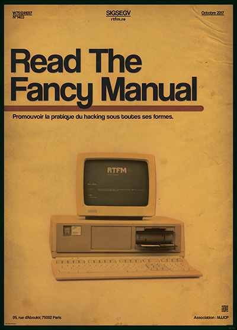

De Linux Command Line: Bash
Embedded & Operating Systems 3
Introductie
Navigatie
cdpwdls/,~,.en..cd -
Bestandsmanupilatie
touchcpmvrm
Directorymanupilatie
mkdirrmdircp -renrm -r
Flags / Command Line Arguments
- Eenletter flags (
-r,-f,-rf) - Langere flags (
--help) - Verplichte argumenten (e.g. paden)
- Optionele positiebepaalde argumenten
- Flags met argument (
-w 3,--width=3)
find | less
SYS_pipe
- Shell maakt een pipe met
pipe() - Shell
forkt twee keer - Child 1 stuurt uitvoer naar pipe
- Child 2 leest invoer uit pipe
- Child 1 roept
exec()aan metfind - Child 2 roept
exec()aan metless - Parent wacht tot beide children
exiten
STDIN en STDOUT
TODO: Plaatje
IO Redirection
find /home/jon > filetree 2> errors.logwc -l filetree >> filetreewc -c << EOFpsql databasename < sqlfile
IO Redirection
command a1 a2 < in > out 2> /dev/null
- De shell
forkt - Child sluit
STDINen opentinalsSTDIN - Child sluit
STDOUTen opentoutalsSTDOUT - Child sluit
STDERR, opent/dev/nullalsSTDERR - Child roept
exec()aan metcommanden geefta1 a2als argumenten mee - Parent wacht tot het kind
exit
grep, cut en sort
ls -l | grep 2018ls -l | cut -c14- | sort
RTFM

cut --helpman cut
Pipelines en Command-lists
foo | barfoo ; barfoo | bar ; baz | quux
Exit Status
foo || barfoo && bar
Procesmanagement
ps,ps -Atopkill,killall
Signals
| SIGKILL(9) | Proces beëindigen, kan niet afgevangen worden |
| SIGUSR1(10) | User defined, verschilt per programma |
| SIGTERM(15) | Standaard signaal, “sterf, alsjeblieft” |
| SIGCONT(18) | Hervat een gestopt (gepauseerd) proces |
| SIGSTOP(19) | Stop tot je een SIGCONT krijgt |
Fore- en Background jobs
command &C-zfgenbgjobsdisown
Quotes, variabelen en echo
# ' " \ $ ` * ~ ? < > ( ) ! & | ;- spatie en enter
- escaping met
\ - single quote strings
- double quote strings
echo
cat
cat(C-dom te stoppen)cat fooecho fooecho foo | catecho foo | echo
root-rechten

susudo lssu -c lssudo bashsu jonsudo -u jon ls
Lifehacks
- Tab completion
- Globs (
*en?) - Pijltjestoetsen,
C-p,C-n C-renhistoryC-c,C-denC-zC-a,C-e,C-jenC-l
Wat hebben we deze les geleerd?
- Basiscommando’s in Bash
- Command Line Arguments
- Pipes en IO Redirection
- Pipelines, Command Lists en Exit Status
- Signals en Background Jobs
- Quoting
- Lifehacks